Load Some Data
phylogeo uses the mapproj package to draw its maps. This package supports a large number of projections and phylogeo supports nearly all of them as demonstrated below.
library(phylogeo)## Loading required package: ggplot2## Warning: package 'ggplot2' was built under R version 3.1.3## Loading required package: methods
## Loading required package: gridExtra
## Loading required package: grid
## Loading required package: phyloseq
## Loading required package: mapproj
## Loading required package: maps## Warning: replacing previous import by 'dplyr::%>%' when loading 'phylogeo'data(mountainsoil)
data(batmicrobiome)
data(epoxomicin_KS)Mercator Projection
#mercator() equally spaced straight meridians, conformal, straight compass courses
map_phyloseq(epoxomicin_KS, projection="mercator")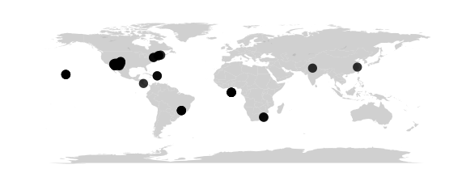
map_network(epoxomicin_KS, projection="mercator", lines=TRUE, color="Geotype", jitter=TRUE)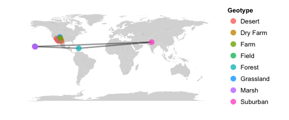
map_tree(epoxomicin_KS, projection="mercator")## Scale for 'x' is already present. Adding another scale for 'x', which will replace the existing scale.
Sinusoidal Projection
#sinusoidal() equally spaced parallels, equal-area, same as bonne(0)
map_phyloseq(epoxomicin_KS, projection="sinusoidal")
Cylequalarea Projection
#cylequalarea(lat0) equally spaced straight meridians, equal-area, true scale on lat0
map_phyloseq(epoxomicin_KS, projection="cylequalarea", lat0=20)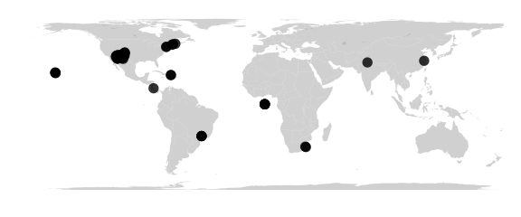
Rectangular Projection
#rectangular(lat0) equally spaced parallels, equally spaced straight meridians, true scale on lat0
map_phyloseq(epoxomicin_KS, projection="rectangular", lat0=30)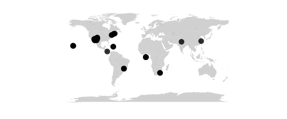
Mollweide Projection
#mollweide() (homalographic) equal-area, hemisphere is a circle
map_phyloseq(epoxomicin_KS, projection="mollweide")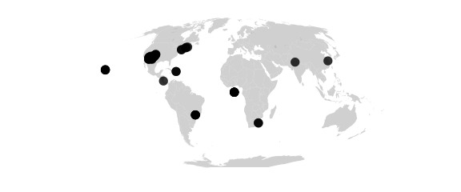
Gilbert Projection
#gilbert() sphere conformally mapped on hemisphere and viewed orthographically
map_phyloseq(epoxomicin_KS, projection="gilbert")Azimuthal projections
Azimuthal projections centered on the North Pole. Parallels are concentric circles. Meridians are equally spaced radial lines.centered on the North Pole. Parallels are concentric circles. Meridians are equally spaced radial lines.
Azequidistant Projection
#azequidistant() equally spaced parallels, true distances from pole
map_phyloseq(epoxomicin_KS, projection="azequidistant")Azequalarea Projection
#azequalarea() equal-area
map_phyloseq(epoxomicin_KS, projection="azequalarea")Gnomonic Projection
#gnomonic() central projection on tangent plane, straight great circles
map_phyloseq(epoxomicin_KS, projection="gnomonic")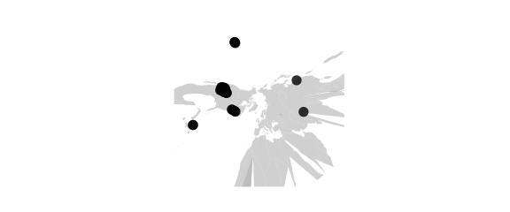
Orthographic Projection
#orthographic() viewed from infinity
map_phyloseq(epoxomicin_KS, projection="orthographic")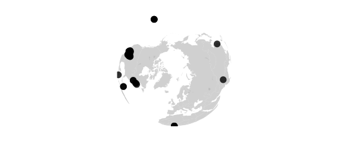
Laue Projection
#laue() radius = tan(2 * colatitude) used in xray crystallography
map_phyloseq(epoxomicin_KS, projection="laue")
Fisheye Projection
#fisheye(n) stereographic seen through medium with refractive index n
map_phyloseq(epoxomicin_KS, projection="fisheye", n=0.5)Polar conic projections
Polar conic projections are symmetric about the Prime Meridian. Parallels are segments of concentric circles. Except in the Bonne projection, meridians are equally spaced radial lines orthogonal to the parallels.
Conic Projection
#conic(lat0) central projection on cone tangent at lat0
map_phyloseq(epoxomicin_KS, projection="conic", lat0=20)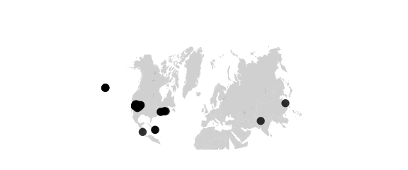
SimpleConic Projection
#simpleconic(lat0,lat1) equally spaced parallels, true scale on lat0 and lat1
map_phyloseq(epoxomicin_KS, projection="simpleconic", lat0=20, lat1=70)Lambert Projection
#lambert(lat0,lat1)conformal, true scale on lat0 and lat1
map_phyloseq(epoxomicin_KS, projection="lambert", lat0=20, lat1=70)Albers Projection
#albers(lat0,lat1)equal-area, true scale on lat0 and lat1
map_phyloseq(epoxomicin_KS, projection="albers", lat0=20, lat1=70)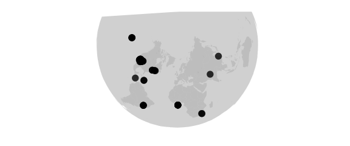
Bilateral Projections
Projections with bilateral symmetry about the Prime Meridian and the equator.
Polyconic Projection
#polyconic() parallels developed from tangent cones, equally spaced along Prime Meridian
map_phyloseq(epoxomicin_KS, projection="polyconic")Aitoff Projection
#aitoff() equal-area projection of globe onto 2-to-1 ellipse, based on azequalarea
map_phyloseq(epoxomicin_KS, projection="aitoff")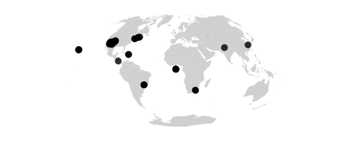
Lagrange Projection
#lagrange() conformal, maps whole sphere into a circle
map_phyloseq(epoxomicin_KS, projection="lagrange")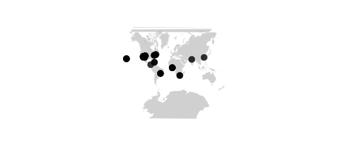
Bicentric Projection
#bicentric(lon0) points plotted at true azimuth from two centers on the equator
#at longitudes +lon0 and -lon0, great circles are
#straight lines (a stretched gnomonic projection)
map_phyloseq(epoxomicin_KS, projection="bicentric", lon0=20)Elliptic Projection
#elliptic(lon0) points are plotted at true distance from two
#centers on the equator at longitudes +lon0 and -lon0
map_phyloseq(epoxomicin_KS, projection="elliptic", lon0=20)Globular Projection
#globular() hemisphere is circle, circular arc meridians equally spaced on equator, circular arc parallels equally spaced on 0- and 90-degree meridians
map_phyloseq(epoxomicin_KS, projection="globular")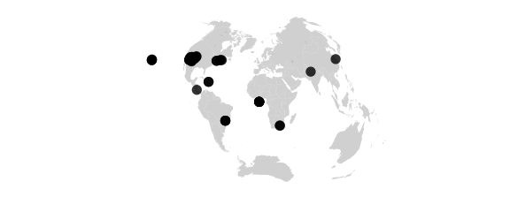
Vandergrinten Projection
#vandergrinten() sphere is circle, meridians as in globular, circular arc parallels resemble mercator
map_phyloseq(epoxomicin_KS, projection="globular")
Doubly periodic conformal projections.
Guyou Projection
#guyou W and E hemispheres are square
map_phyloseq(epoxomicin_KS, projection="guyou")
Square Projection
#guyou W and E hemispheres are square
map_phyloseq(epoxomicin_KS, projection="guyou")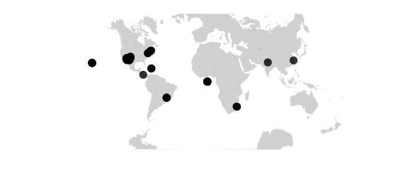
Tetra Projection
#tetra map on tetrahedron with edge tangent to Prime Meridian
#at S Pole, unfolded into equilateral triangle
map_phyloseq(epoxomicin_KS, projection="tetra")Miscellaneous projections.
Hex Projection
#hex world is hexagon centered on N Pole, N and S hemispheres are equilateral triangles
map_phyloseq(epoxomicin_KS, projection="hex")Retroazimuthal projections
Retroazimuthal projections. At every point the angle between vertical and a straight line to “Mecca”, latitude lat0 on the prime meridian, is the true bearing of Mecca.At every point the angle between vertical and a straight line to “Mecca”, latitude lat0 on the prime meridian, is the true bearing of Mecca.
Mecca Projection
#mecca(lat0) equally spaced vertical meridians
map_phyloseq(epoxomicin_KS, projection="mecca", lat0=20)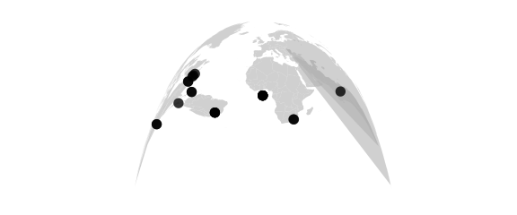
Homing Projection
#homing(lat0) distances to Mecca are true
map_phyloseq(epoxomicin_KS, projection="homing", lat0=20)